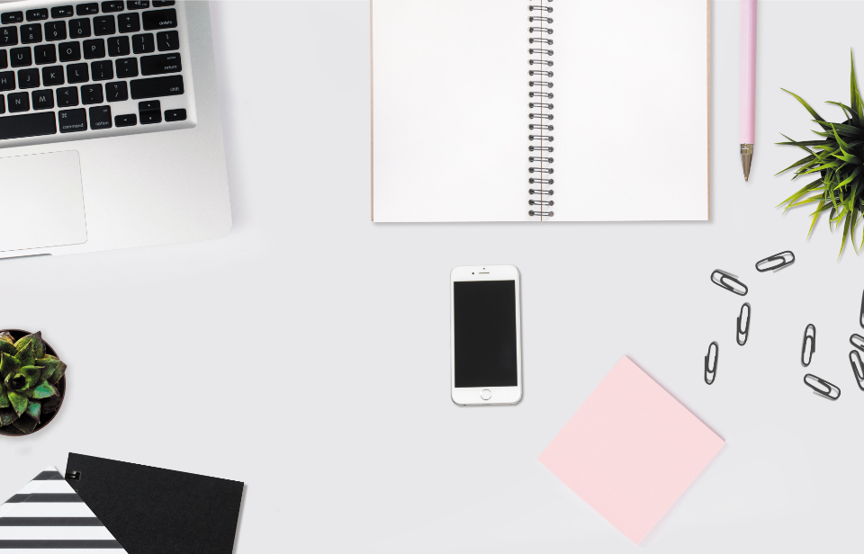

9:00
URGENT SYNC
9:30
CALL
10:00
STANDUP
10:30
RE: RE:
Inbox 47
URGENT: quick question?
Re: Re: following up
[Action needed] today
3Slack · now
!Reminder · due


A STRANGE RULE
LESS REAL WORK =
LOOK MORE IMPORTANT
LOOK MORE IMPORTANT

"THIS PERSON MATTERS"

(THINK QUIETLY)
LAZY?
"ASLEEP - EYES OPEN"

EVERYONE GETS BUSY
…GOOD AT LOOKING BUSY
THERE IS A
DIFFERENCE
DIFFERENCE